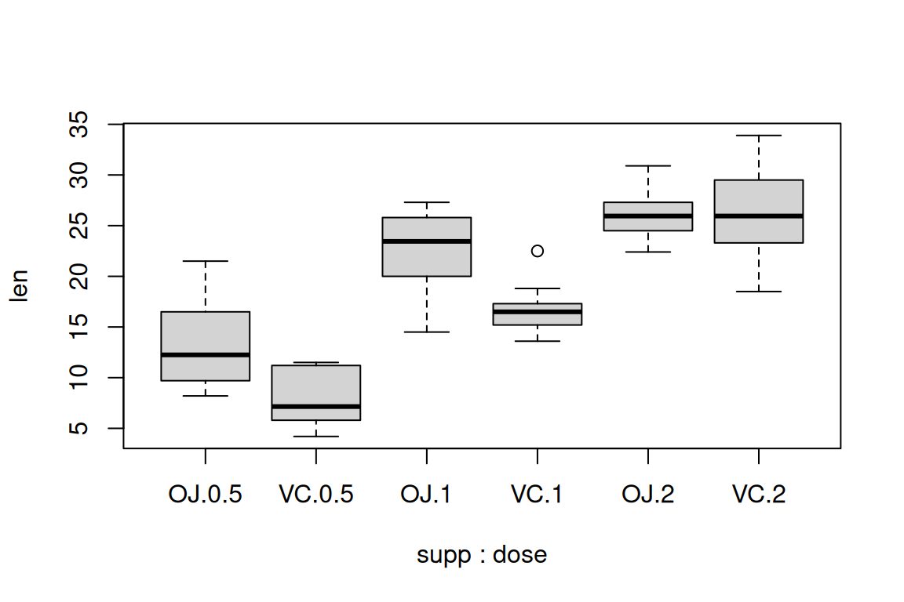
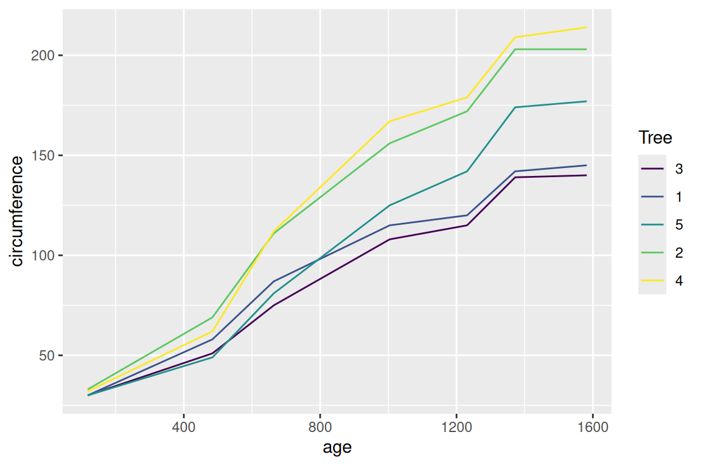
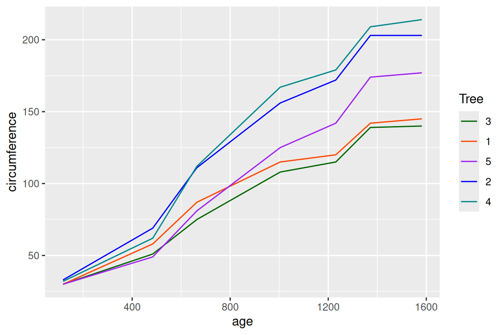
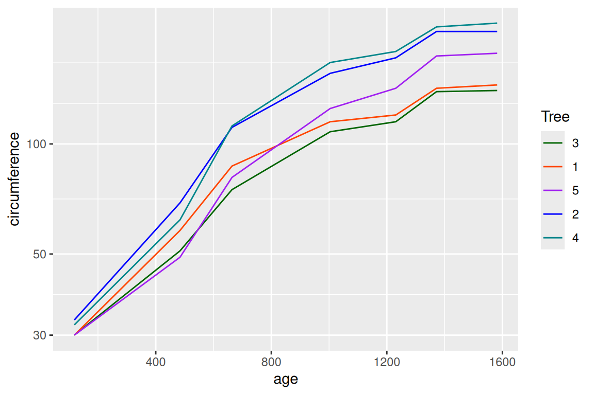
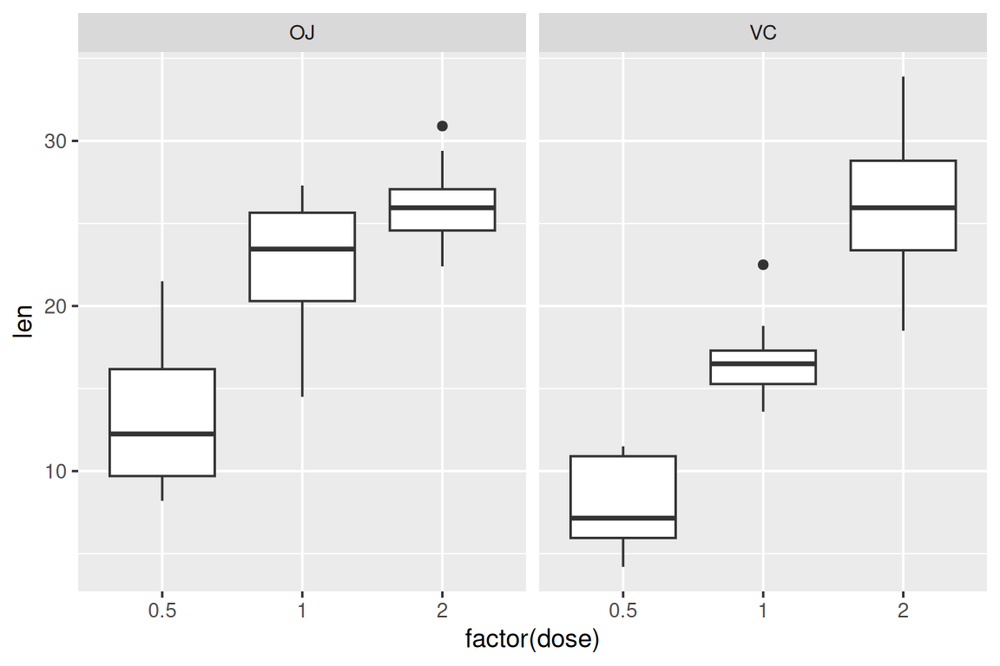

Using the ToothGrowth dataset, plot a box plot of tooth length by dose and supplement. (Hint! You can use the “formula” argument to combine multiple variables)
as.formula("y ~ x1 + x2") # example#> y ~ x1 + x2boxplot(len ~ supp + dose, data = datasets::ToothGrowth)

15.2 Breakout Problems - 3b
These are the same problems from before, but now try solve them with ggplot2!
Using the airquality dataset, plot a histogram of temperature.
Extend your previous answer to add a plot title, and label the axes. (Hint! We saw the function labs() before.)
p <- datasets::airquality |>ggplot() +aes(x = Temp) +geom_histogram(binwidth =5) +labs(x ="Temperature (F)",y ="Number of days",title ="Temperature between May and September" )
Using the ToothGrowth dataset, plot a box plot of tooth length by dose and supplement. (Hint! You might need to make a new column or variable for the x-axis)
The datasets::Orange data frame describes the growth of 5 orange trees over time (days). Create a plot showing the circumference over time, with each tree distinguished by a different color.
datasets::Orange |>ggplot() +aes(x = age, y = circumference, color = Tree) +geom_line()

Update your plot by manually setting the colors of each tree, and adding informative axis labels
datasets::Orange |>ggplot() +aes(x = age, y = circumference, color = Tree) +geom_line() +scale_color_manual(values =c("darkgreen", "orangered", "purple", "blue", "turquoise4") )

The trees seem to grow at different rates depending on their age. Use scale_y_log10 to compare how scaling the y-axis influences how you read the plot.
datasets::Orange |>ggplot() +aes(x = age, y = circumference, color = Tree) +geom_line() +scale_color_manual(values =c("darkgreen", "orangered", "purple", "blue", "turquoise4") ) +scale_y_log10()

Save your favorite version of your plot to the figures directory.
p <- datasets::Orange |>ggplot() +aes(x = age, y = circumference, color = Tree) +geom_line() +scale_color_manual(values =c("darkgreen", "orangered", "purple", "blue", "turquoise4") )ggsave(file.path("..", "figures", "orange_tree_growth.pdf"), p)
15.4 Breakout Questions - 3d (NOT ON HOMEWORK/MIDTERM, JUST HELPFUL)
Working with the ToothGrowth data set, create a boxplot of tooth length as a function of dose size, with each supplement type represented as a separate facet.
# boxplots are defined for categorical data, so we need to turn dose (numeric)# into a categorical variable. p <- datasets::ToothGrowth |>ggplot() +aes(x =factor(dose), y = len) +facet_wrap(~supp) +geom_boxplot()p

Building on your answer to this question, add axis labels, and customize the theme. Try change at least two arguments to theme().